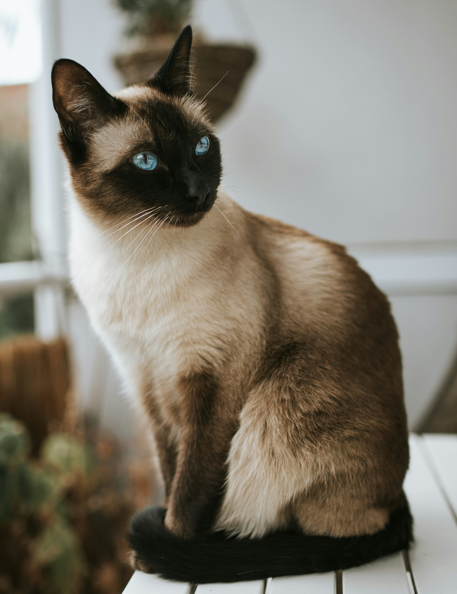
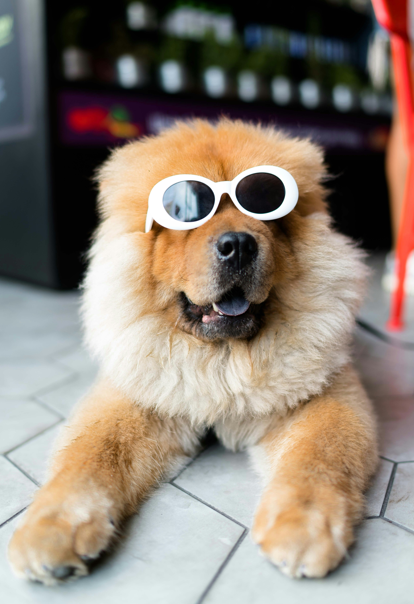
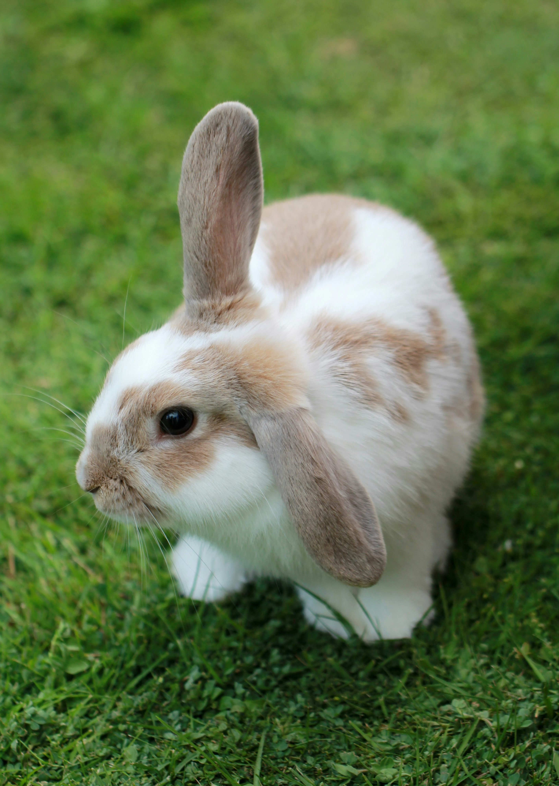

Adopt A Pet

Find Your Perfect PawMatch
Welcome to PawMatch!
We're thrilled to have you join our community of animal lovers. At PawMatch, we believe that every pet deserves a loving home. Our platform is designed to connect adoptable animals with their perfect families.
Browse our extensive database of furry friends, from playful puppies to cuddly kittens and more. Each profile provides detailed information about the pet's personality, breed, and care requirements. We also offer helpful resources like pet care tips and adoption advice.
How to Adopt Your Perfect PawMatch

Step 1: Browse Our Adoptable Animals
Discover your perfect furry companion from our diverse range of adoptable animals. Browse through profiles of dogs, cats, and other pets, each with detailed information about their personality, breed, and care requirements.
Step 2: Meet and Greet
Once you've found a potential match, schedule a meet and greet. Visit our adoption centers or contact foster parents directly to spend quality time with the animal. This will help you determine if it's the right fit for your lifestyle.

